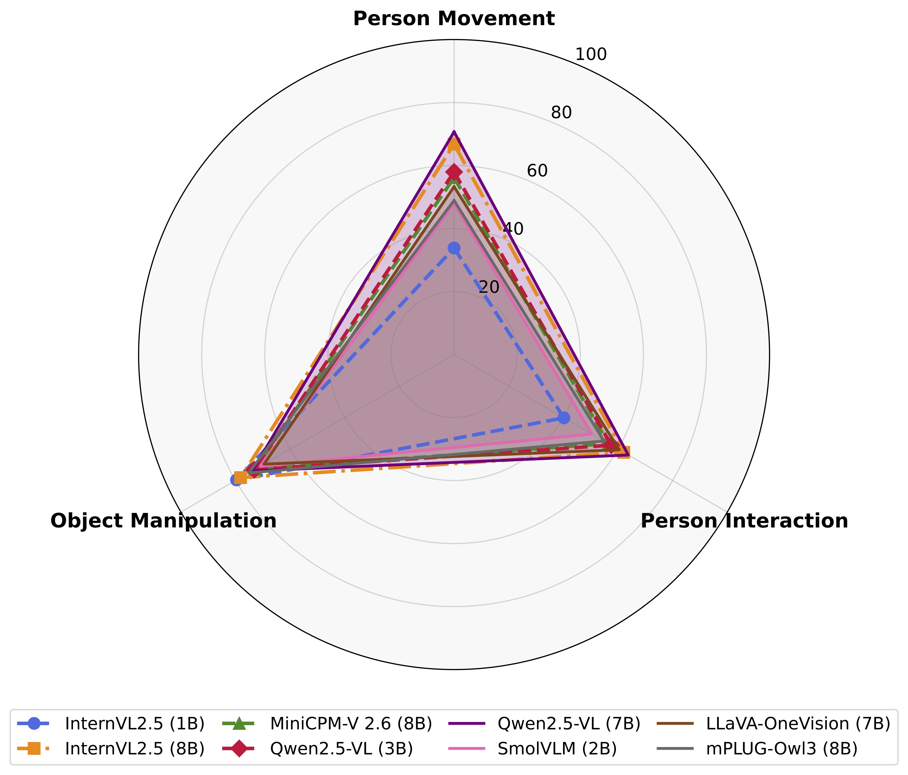
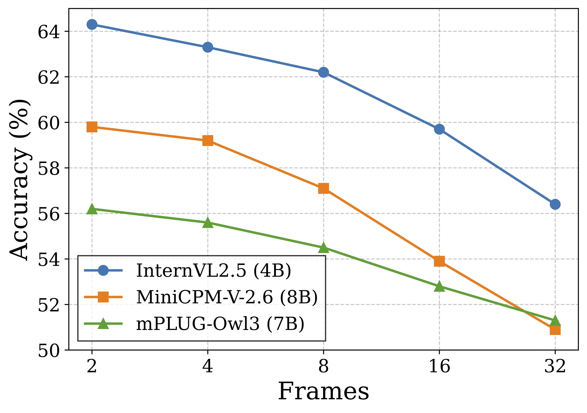
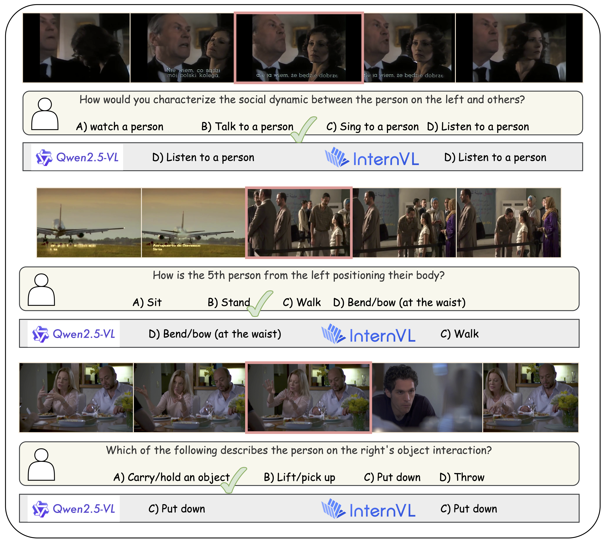
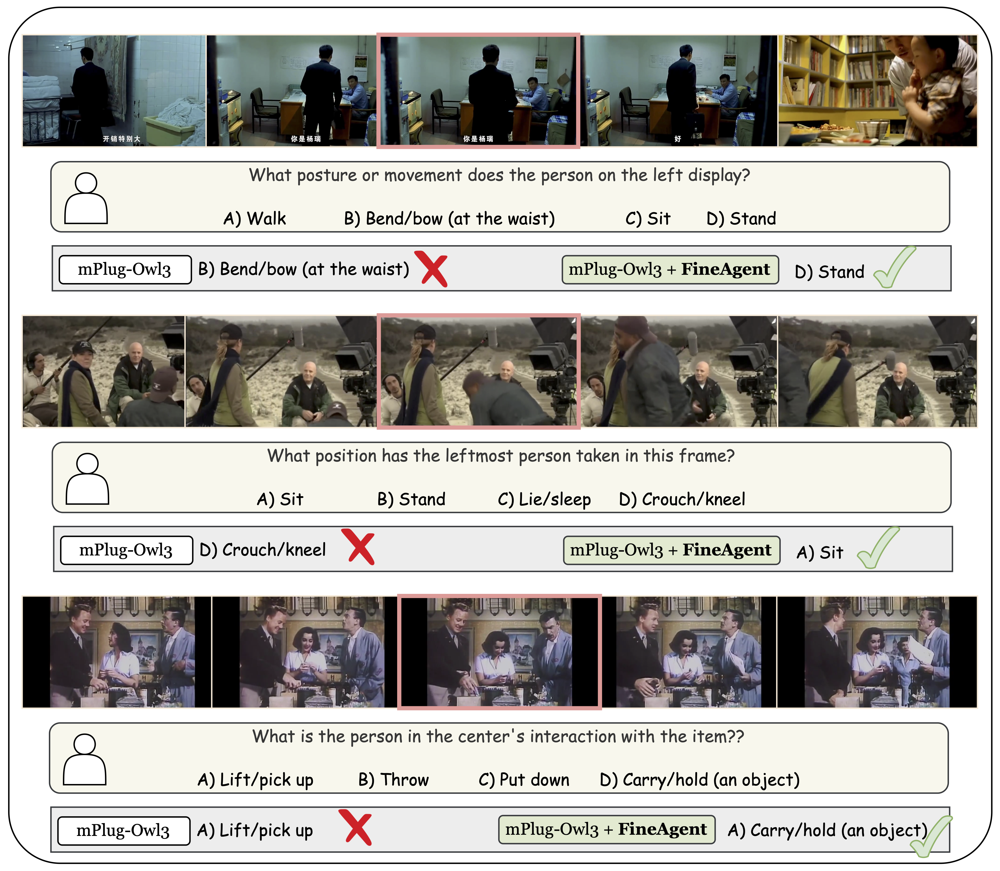

- 199,420 multiple-choice QA pairs across 64 long-form videos (~15 minutes each)
- Average ~3,116 questions per video
- Dense spatial and temporal grounding; categories: person movement, person interaction, object manipulation
Vision-Language Models (VLMs) have demonstrated remarkable capabilities in general video understanding, yet they often struggle with the fine-grained comprehension crucial for real-world applications requiring nuanced interpretation of human actions and interactions.
While some recent human-centric benchmarks evaluate aspects of model behaviour such as fairness/ethics, emotion perception, and broader human-centric metrics, they do not combine long-form videos, very dense QA coverage, and frame-level spatial/temporal grounding at scale. To bridge this gap, we introduce FineBench, a human-centric video question answering (VQA) benchmark specifically designed to assess fine-grained understanding.
FineBench comprises 199,420 multiple-choice QA pairs densely annotated across 64 long-form videos (15 minutes each), focusing on detailed person movement, person interaction, and object manipulation, including compositional actions.
Our extensive evaluation reveals that while proprietary models like GPT-5 achieve respectable performance, current open-source VLMs significantly underperform, struggling particularly with spatial reasoning in multi-person scenes and distinguishing subtle differences in human movements and interactions.
To address these identified weaknesses, we propose FineAgent, a modular framework that enhances VLMs by leveraging a Localizer and a Descriptor. Experiments show that FineAgent consistently improves the performance of various open VLMs on FineBench.
FineBench provides a rigorous testbed for future research into fine-grained human-centric video understanding, while FineAgent offers a practical approach to enhance such reasoning in current VLMs.




The evaluation code and scripts to reproduce our results are available at github.com/joslefaure/FineBench_eval. Below is the main results table from the paper (subset and full-dataset evaluations).
| Model | Size | P. Movement | P. Interaction | Obj. Manipulation | Avg. |
|---|---|---|---|---|---|
| Random Choice | -- | 25.0 | 25.0 | 25.0 | 25.0 |
| Subset Evaluation | |||||
| GPT-4o (2024/08/26) | -- | 70.9 | 73.9 | 84.4 | 74.3 |
| GPT-5-mini (2025/08/07) | -- | 75.9 | 75.3 | 85.3 | 77.4 |
| Gemini-1.5-Flash | -- | 71.2 | 66.8 | 81.9 | 71.6 |
| Gemini-2.0-Flash | -- | 75.9 | 68.7 | 86.3 | 75.2 |
| SmolVLM | 2B | 48.5 | 48.0 | 80.0 | 53.9 |
| MiniCPM-2.6 | 8B | 49.5 | 57.4 | 84.8 | 58.4 |
| mPlugOwl-3 | 7B | 47.9 | 55.8 | 84.0 | 56.6 |
| Full Dataset Evaluation | |||||
| InternVL-2.5 | 1B | 33.8 | 40.2 | 79.6 | 44.1 |
| SmolVLM | 2B | 47.9 | 50.5 | 71.0 | 52.9 |
| Qwen2.5-VL | 3B | 58.0 | 57.5 | 73.2 | 60.5 |
| BLIP-3 | 4B | 34.3 | 58.6 | 64.9 | 48.2 |
| InternVL-2.5 | 4B | 61.4 | 58.6 | 78.1 | 63.3 |
| mPlugOwl-2 | 7B | 57.6 | 49.2 | 78.5 | 58.3 |
| mPlugOwl-3 | 7B | 48.9 | 54.8 | 75.2 | 55.6 |
| MiniCPM-2.6 | 8B | 56.2 | 56.5 | 72.8 | 59.2 |
| LLaVA-OV | 7B | 53.3 | 60.4 | 69.6 | 58.6 |
| InternVL-2.5 | 8B | 66.8 | 62.1 | 78.1 | 67.1 |
| Qwen2.5-VL | 7B | 70.7 | 63.8 | 73.9 | 68.8 |
@misc{faure2026finebench,
title={FineBench: Benchmarking and Enhancing Vision-Language Models for Fine-grained Human Activity Understanding},
author={Gueter Josmy Faure and Min-Hung Chen and Jia-Fong Yeh and Hung-Ting Su and Winston H. Hsu},
year={2026},
note={VidLLMs'2026 (CVPR Workshop)},
url={https://joslefaure.github.io/assets/html/finebench.html},
}